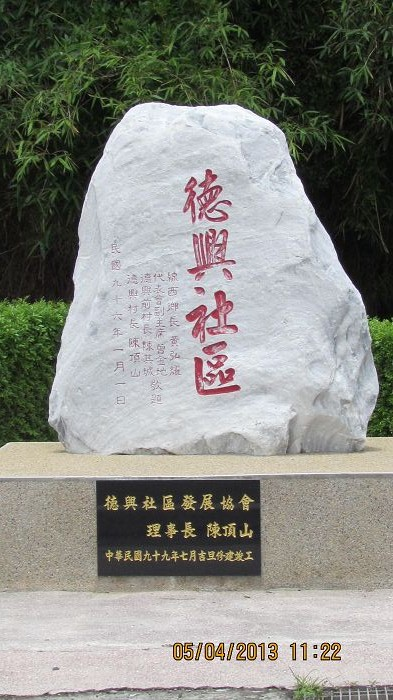

德興社區

十五張犁由來有三種說法：
一：該地區由15位佃農分據農地，故舊名由此得。
二：該地區由福馬圳灌溉當地區農地，但水源有限，必須分區
、段、時供水，因此為公平起見，便在該地區域平均分成15段水閘門，以公
平供水故稱之。
三：「張犁」為土地面積計算單位「一張犁」代表五甲土地可供耕作，「十五
張」為七十五甲可供早期移民耕作使用之土地面積，故名十五張犁。
十五張犁（今彰化縣線西鄉德興村）。在線西街區之東方約一．二公里處，位
於彰化平原之西北部，海拔約至一Ｏ公尺之間。地名起源於墾成農地之面積
有七十五甲（按每張犁五甲計算），故稱十五張犁。據云最初遷入者為姓吳
，後來有許、陳二姓墾民來墾。今居民中以許、陳、林姓氏為最多。境內有
福馬圳田尾排水溝灌溉，居民以農為業，主要物產有稻米、大蒜、荸薺、鵪
鶉蛋等。
<--回德興村首頁 |